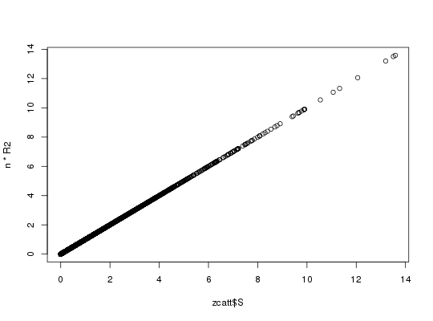

For a bigSNP:
snp_pruning: LD pruning. Similar to "--indep-pairwise size 1 thr.corr"
in http://pngu.mgh.harvard.edu/~purcell/plink/summary.shtml#prune
(step is fixed to 1).
snp_clumping: LD clumping.
snp_indLRLDR: Get SNP indices of long-range LD regions.
snp_clumping(x, S, ind.train = seq(nrow(X)), size = 500, thr.corr = 0.5, exclude = NULL, ncores = 1) snp_pruning(x, ind.train = seq(nrow(X)), size = 50, thr.corr = 0.5, exclude = NULL, ncores = 1) snp_indLRLDR(x, LD.regions = LD.wiki34)
S follows the standard normal distribution,
you should probably use abs(S) instead.500 (I use this for a chip of 500K SNPs).
50 (as in PLINK).
0.5.S.data.frame with columns "Chr", "Start" and "Stop".
Default use the table of 34 long-range LD regions that you can find
https://goo.gl/0Ou7uI.snp_pruning & snp_pruning: SNP indices which are kept.
snp_indLRLDR: SNP indices to be used as (part of) the
exclude parameter of snp_pruning or snp_clumping.
I recommend to use clumping rather than pruning. See https://privefl.github.io/bigsnpr/articles/pruning-vs-clumping.html.
Price AL, Weale ME, Patterson N, et al. Long-Range LD Can Confound Genome Scans in Admixed Populations. Am J Hum Genet. 2008;83(1):132-135. http://dx.doi.org/10.1016/j.ajhg.2008.06.005
set.seed(1) test <- snp_readExample() # need another example X <- test$genotypes print(n <- nrow(X))#> [1] 517print(m <- ncol(X))#> [1] 4542# pruning / clumping with MAF ind.keep <- snp_pruning(test, thr.corr = 0.1) print(length(ind.keep) / m)#> [1] 0.9817261p <- bigstatsr::big_colstats(X)$sum / (2 * n) maf <- pmin(p, 1 - p) ind.keep2 <- snp_clumping(test, S = maf, thr.corr = 0.1) # clumping for PRS test$fam$affection <- sample(1:2, size = n, replace = TRUE) zcatt <- snp_MAX3(test, val = 0.5) R2 <- bigstatsr::big_univRegLin(X, test$fam$affection)["R2", ] plot(zcatt$S, n * R2) # same thingind.keep3 <- snp_clumping(test, S = zcatt$S, thr.corr = 0.1) print(length(ind.keep3))#> [1] 3934# thresholding though the exclude parameter ind.keep4 <- snp_clumping(test, S = zcatt$S, thr.corr = 0.1, exclude = which(-log10(zcatt$pS) > 1)) print(length(ind.keep4))#> [1] 3591